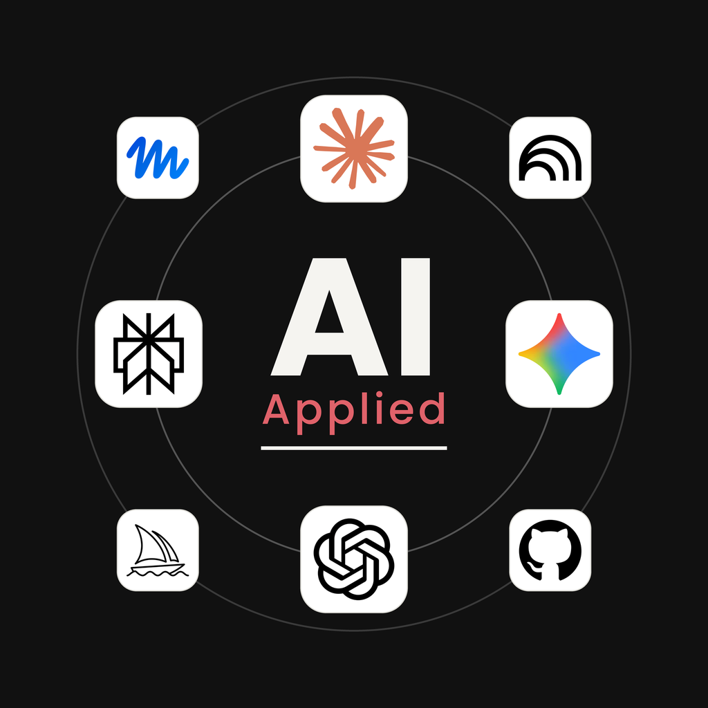

Terminal
A text window that controls your whole computer. It looks intimidating. It isn't. You'll be running commands in the first session.
AI Applied is a hands-on club at Greenwich High. Every session you build something real and walk out with a skill you can use the next day.

AI Applied is a hands-on club for students who want AI to be useful in their real lives. Every meeting you build something and leave with a skill you can use the next day, for school, creative projects, and the work you want to do after. No lectures. No slide decks full of definitions. Just the tools, a real task, and time to get it done.
Every session is built around one of these. All practical, all useful outside the room.
Learn what ChatGPT, Gemini, NotebookLM, Perplexity, and Claude each do best, and how to get real work out of them.
Make a study tutor, a personal assistant, a creative piece, and a small web tool, with AI doing the heavy lifting and you steering.
The goal isn't to be impressed by AI. It's to make it a normal part of how you study, create, and solve problems.
No experience needed. These are the computer skills that make AI tools easier to use, and you'll pick them up as we go.
A text window that controls your whole computer. It looks intimidating. It isn't. You'll be running commands in the first session.
Where your files actually live. Organize your projects, stop losing things in Downloads, and navigate your computer like you own it.
What does /Users/you/Documents actually mean? Once it clicks you'll wonder how you got by without it. Takes about five minutes.
The ones everyone knows, plus the ones that actually save time. Copy, undo, switch apps, screenshot. Small habits, big difference.
VS Code is where you write code. We'll get you set up and walk through the layout so nothing about it feels foreign before we build.
Right-click any website and look inside it. You can see exactly how it was built. Most people have no idea this exists.
Most meetings stand alone, so you can jump in anywhere and still leave with something. This plan is pending school approval and may change.
Accounts, prompts that work, and picking the right tool for the job.
Study kits, an AI tutor for your hardest class, and research with real sources. Study, not answers: AI as tutor and quizzer, never doing graded work.
An assistant tuned to your life, and one chore automated.
Images, design, video, audio, and writing.
Docs, Sheets, and Slides, resumes, interview practice, and how AI shows up in real jobs.
A web page AI helps you write, live on the internet.
Pick one piece, push it further, and show your portfolio.
Everything you make goes in your portfolio. By the end of the year it holds a personal assistant, a study system, a creative piece, and a live web tool.
The club is waiting on school approval. Follow the Instagram and you'll know the moment sign-ups open.
Once approved, meetings run weekly at Greenwich High School, each with one goal and one thing to make.
These aren't club skills, they're life skills. Use them in every class, every project, and every job after.
We post what we're building and we'll announce the moment sign-ups open. Following is the only thing to do right now.
@aiapplied_ghs